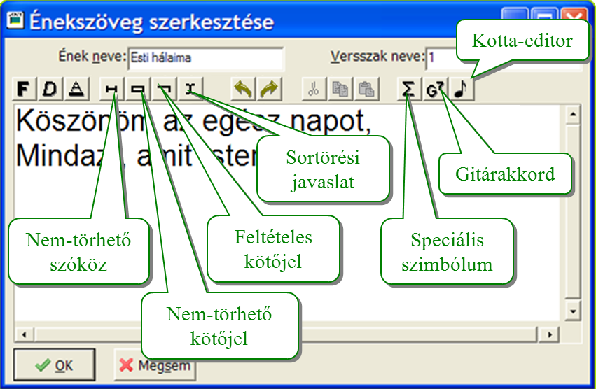

A beírt szöveg a kurzorhoz kerül, ide a következők írhatók be:
- tetszőleges szöveg
- [Enter] az új sor kezdéséhez
- nem-törhető szóköz ([Ctrl]+[Space]), nem-törhető kötőjel ([Ctrl]+[Shift]+[kötőjel]),
feltételes kötőjel ([Ctrl]+[kötőjel])
- sortörési javaslat ([Ctrl]+[Enter]) ha a programnak tördelni
kell a szöveget, lehetőleg itt fog új sort kezdeni
- speciális szimbólum([Ctrl]+[S])
- előre definiált fix szimbólumok ([Ctrl]+[1]..[9]
- gitárakkordok ([Ctrl]+[G]) (lásd az önálló bemutatóját)
- kotta ([Ctrl]+[K]) (lásd az önálló bemutatóját)
Törlésre a [Del] és a [Bsp] billentyűk használhatók, mint bármely szövegszerkesztőben.
